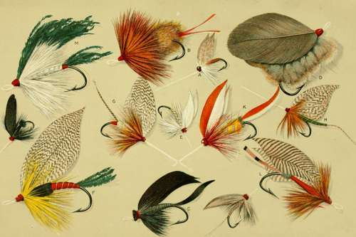

Fishing Tackle And How To Make It
Description
This section is from the book "American Game Fishes", by W. A. Perry. Also available from Amazon: American Game Fishes: Their Habits, Habitat, and Peculiarities; How, When, and Where to Angle for Them.
Fishing Tackle And How To Make It
THE desirability of self-help is more conspicuous in regard to angling than any other sport. Very few fishermen are quite unable to help themselves, it is true; but imagine the plight of the would-be angler by the side of some splendid trout pool, wherein he ever and anon catches sight of incarnadined and gleaming fish-forms, without the least idea of tying a hook, or making a fly, and with only some twine and loose hooks in his possession ! Or suppose him to be scores of miles from the nearest town, with broken rod, reel full of sand, leaders used up, and flies of the wrong sort-all of which may happen, together or separately-and observe what a benefit the few envelopes of feathers and silk, or the hank of gut, screw-driver and oil-can, and loose hooks, with the knob of wax, are to the sportsman who knows how to fix his own tackle. That man who has taken the trouble-and to the true angler it should be a pleasure-to learn to make his own tackle, is alone worthy the name of "Senior angler," and to him assuredly come the highest guerdons of the craft. He is never "cornered;" and the gratification of taking fish is enhanced a thousand-fold by the thought that it was done by means of one's own handicraft throughout. To make one's own rod, tie one's own leaders, dress one's own flies, search out oneself the haunts of the stream's Apollo, the trout, catch him oneself, and share him around the camp-fire with one's friend, is, me seems, the very pinnacle of piscatorial accomplishment. Thus did the past masters of the gentle craft, from the earliest days to those of Uncle Thaddeus Norris, of fragrant and well-loved memory.
Not that the desirability of professional tackle-making is less, but that the principle of resourceful adaptation should be more, in the angler. Flies, and the various appurtenances of the fisherman, can be much better and more truly made in the work-shop than in the wind-swept woods. There are those who cannot afford the time to attend to the practical refurnishing of the tackle-basket. Life is too short already for such, and certainly too brief for the minutiae of fly-making. They pursue wealth, and get it. They can afford to fill the fly-book, etc., with the best that can be bought. There is nothing to say against this. But such people are in danger of becoming mere "dudes," in the art-piscatorial, and they are apt to evoke a smile of genuine pity from the practical fisherman, as he realizes how much is lost in true enjoyment by this growing tendency of wealth to have everything done for it by others.
George Dawson has well said: "It is not all of fishing to fish." So far as I am personally concerned, the aesthetic pleasures of fishing far outbalance the mere gratification of the grosser man-of the hunting instinct. To sit down and imitate some fairy-winged insect and have the seal of approbation placed on it by the leaping fish, is a mental treat to tickle the palate of the intellectual epicure. To make yourself a graceful greenheart or rent cane rod, light and pliant as an Ariel's wand, during the boisterous days of winter, and by its means, through many years, to gently force thousands of fish to your creel, is to create a friend and servant around which will cluster associations of jeweled luster. Nay, will not such a weapon, in the sportsman's sanctum, often and often, as he glances through the smoke of his evening pipe, bring tears to his eyes, recalling from shadow-land "the touch of a vanished hand and the sound of a voice that is still?" Odds and ends of tackle are strewn around me on the table even as I write. Some are suggestive of friends scattered over this broad fair land-others of good anglers and true across the ocean; and dearest of all are those mementos of him to whom I owe all of the enthusiasm, and skill, as a practical fisherman, I possess. He it was who taught me to tie a hook at five years of age, and catch a three-pound trout soon after; and who has now passed to where, "beyond these voices there is peace"-my father. Such associations are inexpressibly welcome to the angler, but they are practically unknown to the dilettante fisherman. Of a verity, "It is not all of fishing to fish."
In the following paper I purpose giving (i) my deliberate selection as to the most suitable tackle for angling of all kinds, (2) and explanations of its materials and methods of amateur manufacture. Of course my opinion is but that of an individual, and doubtless good anglers and true will differ from me; but it will be an honest one, and in matters of fact I shall state what I know. Not one assertion will be found that depends on the experience of someone else. Thirty-years in the midst of fishing and tackle, in two hemispheres, should have taught me enough to set me up in experience of my own. At any rate I am willing to stand by what appears in this chapter, and to the end that it may be of the utmost utility to the tyro, it has been boiled down to an intense concentration and terse practicality.
The first thing the amateur fisherman had better learn to do is to tie the various knots indispensable in joining tackle. This is a lesson necessary at the very outset of his apprenticeship.
Continue to: